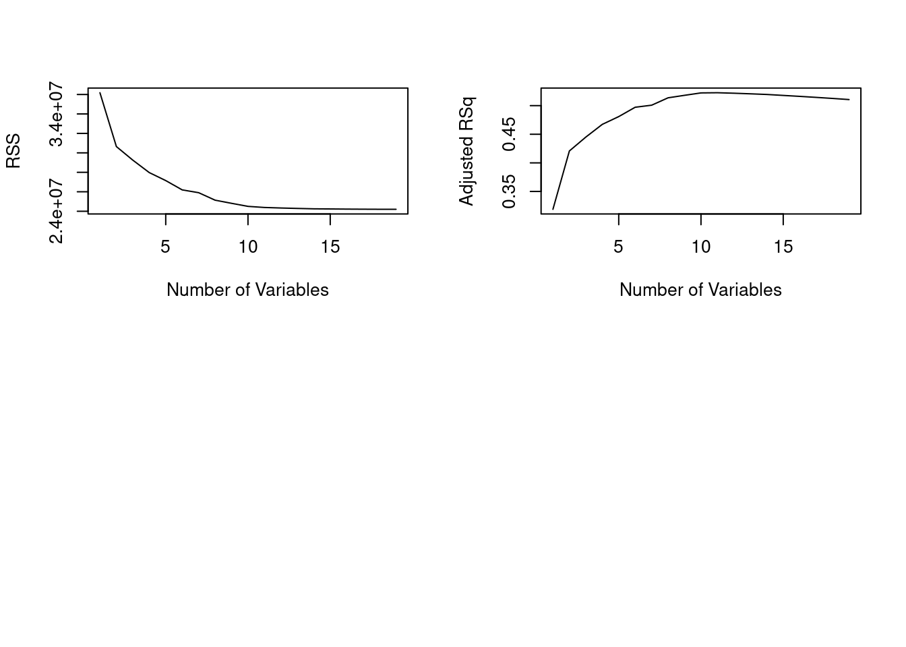

Here we apply the best subset selection approach to the Hitters data. We wish to predict a baseball player’s Salary on the basis of various statistics associated with performance in the previous year.
First of all, we note that the Salary variable is missing for some of the players. The is.na() function can be used to identify the missing observations. It returns a vector of the same length as the input vector, with a TRUE for any elements that are missing, and a FALSE for non-missing elements. The sum() function can then be used to count all of the missing elements.
Hence we see that Salary is missing for \(59\) players. The na.omit() function removes all of the rows that have missing values in any variable.
Hitters <-na.omit(Hitters)dim(Hitters)
[1] 263 20
sum(is.na(Hitters))
[1] 0
The regsubsets() function (part of the leaps library) performs best subset selection by identifying the best model that contains a given number of predictors, where best is quantified using \(R^2\) The syntax is the same as for lm(). The summary() command outputs the best set of variables for each model size.
An asterisk indicates that a given variable is included in the corresponding model. For instance, this output indicates that the best two-variable model contains only Hits and CRBI. By default, regsubsets() only reports results up to the best eight-variable model. But the nvmax option can be used in order to return as many variables as are desired. Here we fit up to a 19-variable model.
regfit.full <-regsubsets(Salary ~ ., data = Hitters,nvmax =19)reg.summary <-summary(regfit.full)
The summary() function also returns \(R^2\), \(SSE\) (given as \(RSS\)), adjusted \(R^2\), \(C_p\), and \(BIC\). We can examine these to try to select the best overall model.
For instance, we see that the \(R^2\) statistic increases from \(32 \%\), when only one variable is included in the model, to almost \(55 \%\), when all variables are included. As expected, the \(R^2\) statistic increases monotonically as more variables are included.
Plotting RSS, adjusted \(R^2\), \(C_p\), and \(BIC\) for all of the models at once will help us decide which model to select. Note the type = "l" option tells R to connect the plotted points with lines.
par(mfrow =c(2, 2))plot(reg.summary$rsq, xlab ="Number of Variables",ylab ="R-squared", type ="l")plot(reg.summary$adjr2, xlab ="Number of Variables",ylab ="Adjusted RSq", type ="l")plot(reg.summary$cp, xlab ="Number of Variables",ylab ="Cp", type ="l")plot(reg.summary$bic, xlab ="Number of Variables",ylab ="BIC", type ="l")

The points() command works like the plot() command, except that it puts points on a plot that has already been created, instead of creating a new plot. The which.max() function can be used to identify the location of the maximum point of a vector. We will now plot a red dot to indicate the model with the largest adjusted \(R^2\) statistic.
which.max(reg.summary$adjr2)
[1] 11
plot(reg.summary$adjr2, xlab ="Number of Variables",ylab ="Adjusted RSq", type ="l")points(11, reg.summary$adjr2[11], col ="red", cex =2, pch =20)
In a similar fashion we can plot the \(C_p\) and BIC statistics, and indicate the models with the smallest statistic using which.min().
plot(reg.summary$cp, xlab ="Number of Variables",ylab ="Cp", type ="l")which.min(reg.summary$cp)
[1] 10
points(10, reg.summary$cp[10], col ="red", cex =2,pch =20)
which.min(reg.summary$bic)
[1] 6
plot(reg.summary$bic, xlab ="Number of Variables",ylab ="BIC", type ="l")points(6, reg.summary$bic[6], col ="red", cex =2,pch =20)
The regsubsets() function has a built-in plot() command which can be used to display the selected variables for the best model with a given number of predictors, ranked according to the BIC, \(C_p\), adjusted \(R^2\), or AIC. To find out more about this function, type ?plot.regsubsets.
plot(regfit.full, scale ="r2")
plot(regfit.full, scale ="adjr2")
plot(regfit.full, scale ="Cp")
plot(regfit.full, scale ="bic")
The top row of each plot contains a black square for each variable selected according to the optimal model associated with that statistic. For instance, we see that several models share a BIC close to \(-150\). However, the model with the lowest BIC is the six-variable model that contains only AtBat, Hits, Walks, CRBI, DivisionW, and PutOuts. We can use the coef() function to see the coefficient estimates associated with this model.
We can also use the regsubsets() function to perform forward stepwise or backward stepwise selection, using the argument method = "forward" or method = "backward".
regfit.fwd <-regsubsets(Salary ~ ., data = Hitters,nvmax =19, method ="forward")summary(regfit.fwd)
For instance, we see that using forward stepwise selection, the best one-variable model contains only CRBI, and the best two-variable model additionally includes Hits. For this data, the best one-variable through six-variable models are each identical for best subset and forward selection. However, the best seven-variable models identified by forward stepwise selection, backward stepwise selection, and best subset selection are different.
We just saw that it is possible to choose among a set of models of different sizes using \(C_p\), \(BIC\), and adjusted \(R^2\). We will now consider how to do this using the validation set and cross-validation approaches.
In order for these approaches to yield accurate estimates of the test error, we must use only the training observations to perform all aspects of model-fitting—including variable selection. Therefore, the determination of which model of a given size is best must be made using only the training observations. This point is subtle but important. If the full data set is used to perform the best subset selection step, the validation set errors and cross-validation errors that we obtain will not be accurate estimates of the test error.
In order to use the validation set approach, we begin by splitting the observations into a training set and a test set. We do this by creating a random vector, train, of elements equal to TRUE if the corresponding observation is in the training set, and FALSE otherwise. The vector test has a TRUE if the observation is in the test set, and a FALSE otherwise. Note the ! in the command to create test causes TRUEs to be switched to FALSEs and vice versa. We also set a random seed so that the user will obtain the same training set/test set split.
Notice that we subset the Hitters data frame directly in the call in order to access only the training subset of the data, using the expression Hitters[train, ]. We now compute the validation set error for the best model of each model size. We first make a model matrix from the test data.
test.mat <-model.matrix(Salary ~ ., data = Hitters[test, ])
The model.matrix() function is used in many regression packages for building an \(X\) matrix from data. Now we run a loop, and for each size i, we extract the coefficients from regfit.best for the best model of that size, multiply them into the appropriate columns of the test model matrix to form the predictions, and compute the test MSE.
val.errors <-rep(NA, 19)for (i in1:19) { coefi <-coef(regfit.best, id = i) pred <- test.mat[, names(coefi)] %*% coefi val.errors[i] <-mean((Hitters$Salary[test] - pred)^2)}
We find that the best model is the one that contains seven variables.
This was a little tedious, partly because there is no predict() method for regsubsets(). Since we will be using this function again, we can capture our steps above and write our own predict method.
predict.regsubsets <-function(object, newdata, id, ...) { form <-as.formula(object$call[[2]]) mat <-model.matrix(form, newdata) coefi <-coef(object, id = id) xvars <-names(coefi) mat[, xvars] %*% coefi }
Our function pretty much mimics what we did above. The only complex part is how we extracted the formula used in the call to regsubsets(). We demonstrate how we use this function below, when we do cross-validation.
Finally, we perform best subset selection on the full data set, and select the best seven-variable model. It is important that we make use of the full data set in order to obtain more accurate coefficient estimates. Note that we perform best subset selection on the full data set and select the best seven-variable model, rather than simply using the variables that were obtained from the training set, because the best seven-variable model on the full data set may differ from the corresponding model on the training set.
regfit.best <-regsubsets(Salary ~ ., data = Hitters,nvmax =19)coef(regfit.best, 7)
In fact, we see that the best seven-variable model on the full data set has a different set of variables than the best seven-variable model on the training set.
8.2.2 K-fold Cross-Validation
We now try to choose among the models of different sizes using cross-validation. This approach is somewhat involved, as we must perform best subset selection within each of the \(k\) training sets. Despite this, we see that with its clever subsetting syntax, R makes this job quite easy. First, we create a vector that allocates each observation to one of \(k=10\) folds, and we create a matrix in which we will store the results.
Now we write a for loop that performs cross-validation. In the \(j\)th fold, the elements of folds that equal j are in the test set, and the remainder are in the training set. We make our predictions for each model size (using our new predict() method), compute the test errors on the appropriate subset, and store them in the appropriate slot in the matrix cv.errors. Note that in the following code R will automatically use our predict.regsubsets() function when we call predict() because the best.fit object has class regsubsets.
for (j in1:k) { best.fit <-regsubsets(Salary ~ .,data = Hitters[folds != j, ],nvmax =19)for (i in1:19) { pred <-predict(best.fit, Hitters[folds == j, ], id = i) cv.errors[j, i] <-mean((Hitters$Salary[folds == j] - pred)^2) } }
This has given us a \(10 \times 19\) matrix, of which the \((j,i)\)th element corresponds to the test MSE for the \(j\)th cross-validation fold for the best \(i\)-variable model. We use the apply() function to average over the columns of this matrix in order to obtain a vector for which the \(i\)th element is the cross-validation error for the \(i\)-variable model.
par(mfrow =c(1, 1))plot(mean.cv.errors, type ="b")
We see that cross-validation selects a 10-variable model. We now perform best subset selection on the full data set in order to obtain the 10-variable model.
reg.best <-regsubsets(Salary ~ ., data = Hitters,nvmax =19)coef(reg.best, 10)